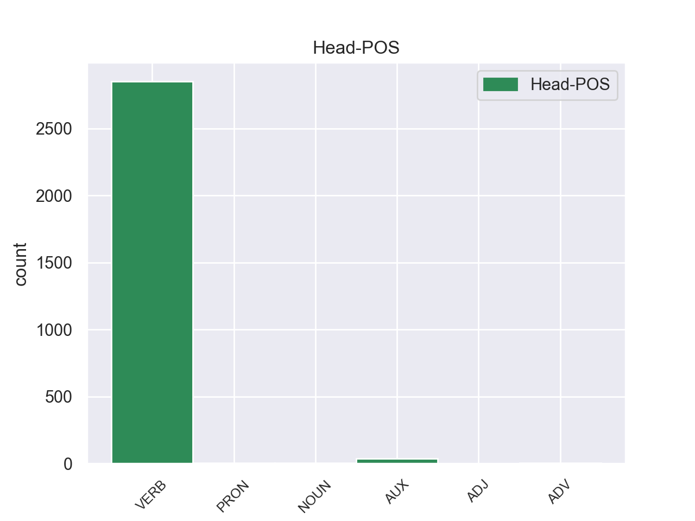
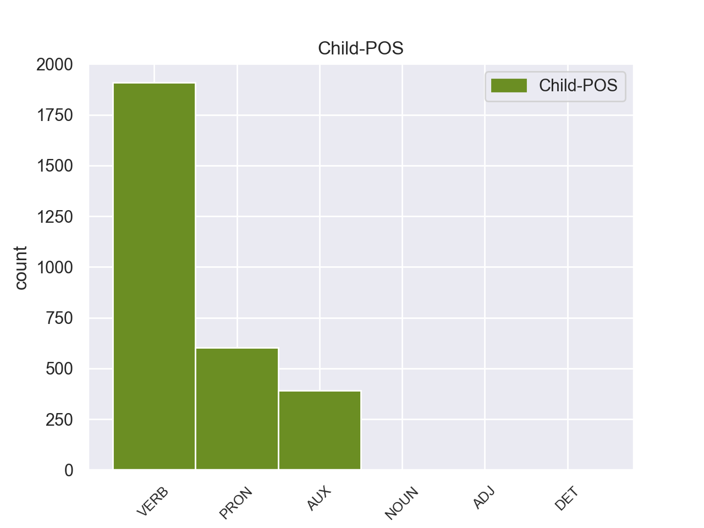

Distribution of features within this leaf



Agreement Rules sorted by frequency.
- When the dependent token is the adverbial clause modifier(advcl) of the head token,
1 πρόκειται _ _ _ _ 0 _ _ _
2 για _ _ _ _ 0 _ _ _
3 αυτό _ _ _ _ 0 _ _ _
4 το _ _ _ _ 0 _ _ _
5 οποίο _ _ _ _ 0 _ _ _
6 αποκαλύφθηκε αποκαλύφθηκε VERB _ Aspect=Perf|Mood=Ind|Number=Sing|Person=3|Tense=Past|VerbForm=Fin|Voice=Act 19 advcl _ _
7 κατά _ _ _ _ 0 _ _ _
8 τη _ _ _ _ 0 _ _ _
9 διάρκεια _ _ _ _ 0 _ _ _
10 αυτής _ _ _ _ 0 _ _ _
11 της _ _ _ _ 0 _ _ _
12 διαδικασίας _ _ _ _ 0 _ _ _
13 , _ _ _ _ 0 _ _ _
14 ότι _ _ _ _ 0 _ _ _
15 ο _ _ _ _ 0 _ _ _
16 Εισαγγελέας _ _ _ _ 0 _ _ _
17 κάποια _ _ _ _ 0 _ _ _
18 στιγμή _ _ _ _ 0 _ _ _
19 ζήτησε ζήω VERB _ Aspect=Perf|Mood=Ind|Number=Sing|Person=3|Tense=Past|VerbForm=Fin|Voice=Act 0 _ _ _
20 από _ _ _ _ 0 _ _ _
21 την _ _ _ _ 0 _ _ _
22 Πρόεδρο _ _ _ _ 0 _ _ _
23 του _ _ _ _ 0 _ _ _
24 Σώματος _ _ _ _ 0 _ _ _
25 , _ _ _ _ 0 _ _ _
26 την _ _ _ _ 0 _ _ _
27 προκάτοχό _ _ _ _ 0 _ _ _
28 σας _ _ _ _ 0 _ _ _
29 , _ _ _ _ 0 _ _ _
30 λεπτομέρειες _ _ _ _ 0 _ _ _
31 για _ _ _ _ 0 _ _ _
32 την _ _ _ _ 0 _ _ _
33 ψήφο _ _ _ _ 0 _ _ _
34 που _ _ _ _ 0 _ _ _
35 έχουν _ _ _ _ 0 _ _ _
36 δώσει _ _ _ _ 0 _ _ _
37 οι _ _ _ _ 0 _ _ _
38 δύο _ _ _ _ 0 _ _ _
39 συγκεκριμένοι _ _ _ _ 0 _ _ _
40 βουλευτές _ _ _ _ 0 _ _ _
41 προκειμένου _ _ _ _ 0 _ _ _
42 να _ _ _ _ 0 _ _ _
43 διευκρινιστεί _ _ _ _ 0 _ _ _
44 περαιτέρω _ _ _ _ 0 _ _ _
45 η _ _ _ _ 0 _ _ _
46 πιθανότητα _ _ _ _ 0 _ _ _
47 να _ _ _ _ 0 _ _ _
48 είχαν _ _ _ _ 0 _ _ _
49 ασκήσει _ _ _ _ 0 _ _ _
50 αθέμιτη _ _ _ _ 0 _ _ _
51 επιρροή _ _ _ _ 0 _ _ _
52 . _ _ _ _ 0 _ _ _
1 Ευελπιστώ _ _ _ _ 0 _ _ _
2 ότι _ _ _ _ 0 _ _ _
3 η _ _ _ _ 0 _ _ _
4 απόφαση _ _ _ _ 0 _ _ _
5 αυτή _ _ _ _ 0 _ _ _
6 , _ _ _ _ 0 _ _ _
7 συμπεριλαμβανομένης _ _ _ _ 0 _ _ _
8 και _ _ _ _ 0 _ _ _
9 της _ _ _ _ 0 _ _ _
10 αιτιολογικής _ _ _ _ 0 _ _ _
11 έκθεσης _ _ _ _ 0 _ _ _
12 που _ _ _ _ 0 _ _ _
13 την _ _ _ _ 0 _ _ _
14 συνοδεύει _ _ _ _ 0 _ _ _
15 , _ _ _ _ 0 _ _ _
16 θα _ _ _ _ 0 _ _ _
17 διαβιβαστεί διαβιβαστεί VERB _ Aspect=Imp|Mood=Ind|Number=Sing|Person=3|Tense=Pres|VerbForm=Fin|Voice=Act 0 _ _ _
18 σ _ _ _ _ 0 _ _ _
19 τις _ _ _ _ 0 _ _ _
20 γαλλικές _ _ _ _ 0 _ _ _
21 αρχές _ _ _ _ 0 _ _ _
22 , _ _ _ _ 0 _ _ _
23 εφόσον _ _ _ _ 0 _ _ _
24 υπερψηφιστεί υπερψηφιστεί VERB _ Aspect=Imp|Mood=Ind|Number=Sing|Person=3|Tense=Pres|VerbForm=Fin|Voice=Act 17 conj _ _
25 από _ _ _ _ 0 _ _ _
26 το _ _ _ _ 0 _ _ _
27 Κοινοβούλιο _ _ _ _ 0 _ _ _
28 . _ _ _ _ 0 _ _ _
1 Ωστόσο _ _ _ _ 0 _ _ _
2 , _ _ _ _ 0 _ _ _
3 ως _ _ _ _ 0 _ _ _
4 προς _ _ _ _ 0 _ _ _
5 την _ _ _ _ 0 _ _ _
6 ουσία _ _ _ _ 0 _ _ _
7 των _ _ _ _ 0 _ _ _
8 κατηγοριών _ _ _ _ 0 _ _ _
9 , _ _ _ _ 0 _ _ _
10 δεν _ _ _ _ 0 _ _ _
11 μπορώ μώ VERB _ Aspect=Imp|Mood=Ind|Number=Sing|Person=3|Tense=Pres|VerbForm=Fin|Voice=Act 0 _ _ _
12 να _ _ _ _ 0 _ _ _
13 λάβω _ _ _ _ 0 _ _ _
14 θέση _ _ _ _ 0 _ _ _
15 , _ _ _ _ 0 _ _ _
16 ούτε _ _ _ _ 0 _ _ _
17 το _ _ _ _ 0 _ _ _
18 Σώμα _ _ _ _ 0 _ _ _
19 πρέπει _ _ _ _ 0 _ _ _
20 να _ _ _ _ 0 _ _ _
21 λάβει λώ VERB _ Aspect=Perf|Mood=Ind|Number=Sing|Person=3|VerbForm=Fin|Voice=Act 11 xcomp _ _
22 θέση _ _ _ _ 0 _ _ _
23 σχετικά _ _ _ _ 0 _ _ _
24 . _ _ _ _ 0 _ _ _
1 πρόκειται _ _ _ _ 0 _ _ _
2 για _ _ _ _ 0 _ _ _
3 αυτό _ _ _ _ 0 _ _ _
4 το _ _ _ _ 0 _ _ _
5 οποίο _ _ _ _ 0 _ _ _
6 αποκαλύφθηκε _ _ _ _ 0 _ _ _
7 κατά _ _ _ _ 0 _ _ _
8 τη _ _ _ _ 0 _ _ _
9 διάρκεια _ _ _ _ 0 _ _ _
10 αυτής _ _ _ _ 0 _ _ _
11 της _ _ _ _ 0 _ _ _
12 διαδικασίας _ _ _ _ 0 _ _ _
13 , _ _ _ _ 0 _ _ _
14 ότι _ _ _ _ 0 _ _ _
15 ο _ _ _ _ 0 _ _ _
16 Εισαγγελέας _ _ _ _ 0 _ _ _
17 κάποια _ _ _ _ 0 _ _ _
18 στιγμή _ _ _ _ 0 _ _ _
19 ζήτησε _ _ _ _ 0 _ _ _
20 από _ _ _ _ 0 _ _ _
21 την _ _ _ _ 0 _ _ _
22 Πρόεδρο _ _ _ _ 0 _ _ _
23 του _ _ _ _ 0 _ _ _
24 Σώματος _ _ _ _ 0 _ _ _
25 , _ _ _ _ 0 _ _ _
26 την _ _ _ _ 0 _ _ _
27 προκάτοχό _ _ _ _ 0 _ _ _
28 σας _ _ _ _ 0 _ _ _
29 , _ _ _ _ 0 _ _ _
30 λεπτομέρειες _ _ _ _ 0 _ _ _
31 για _ _ _ _ 0 _ _ _
32 την _ _ _ _ 0 _ _ _
33 ψήφο _ _ _ _ 0 _ _ _
34 που που PRON _ Case=Nom|Gender=Neut|Number=Plur|Person=3|PronType=Rel 36 nsubj _ _
35 έχουν _ _ _ _ 0 _ _ _
36 δώσει δώσω VERB _ Aspect=Imp|Mood=Ind|Number=Plur|Person=3|Tense=Pres|VerbForm=Fin|Voice=Act 0 _ _ _
37 οι _ _ _ _ 0 _ _ _
38 δύο _ _ _ _ 0 _ _ _
39 συγκεκριμένοι _ _ _ _ 0 _ _ _
40 βουλευτές _ _ _ _ 0 _ _ _
41 προκειμένου _ _ _ _ 0 _ _ _
42 να _ _ _ _ 0 _ _ _
43 διευκρινιστεί _ _ _ _ 0 _ _ _
44 περαιτέρω _ _ _ _ 0 _ _ _
45 η _ _ _ _ 0 _ _ _
46 πιθανότητα _ _ _ _ 0 _ _ _
47 να _ _ _ _ 0 _ _ _
48 είχαν _ _ _ _ 0 _ _ _
49 ασκήσει _ _ _ _ 0 _ _ _
50 αθέμιτη _ _ _ _ 0 _ _ _
51 επιρροή _ _ _ _ 0 _ _ _
52 . _ _ _ _ 0 _ _ _
1 πρόκειται _ _ _ _ 0 _ _ _
2 για _ _ _ _ 0 _ _ _
3 αυτό _ _ _ _ 0 _ _ _
4 το _ _ _ _ 0 _ _ _
5 οποίο _ _ _ _ 0 _ _ _
6 αποκαλύφθηκε _ _ _ _ 0 _ _ _
7 κατά _ _ _ _ 0 _ _ _
8 τη _ _ _ _ 0 _ _ _
9 διάρκεια _ _ _ _ 0 _ _ _
10 αυτής _ _ _ _ 0 _ _ _
11 της _ _ _ _ 0 _ _ _
12 διαδικασίας _ _ _ _ 0 _ _ _
13 , _ _ _ _ 0 _ _ _
14 ότι _ _ _ _ 0 _ _ _
15 ο _ _ _ _ 0 _ _ _
16 Εισαγγελέας _ _ _ _ 0 _ _ _
17 κάποια _ _ _ _ 0 _ _ _
18 στιγμή _ _ _ _ 0 _ _ _
19 ζήτησε _ _ _ _ 0 _ _ _
20 από _ _ _ _ 0 _ _ _
21 την _ _ _ _ 0 _ _ _
22 Πρόεδρο _ _ _ _ 0 _ _ _
23 του _ _ _ _ 0 _ _ _
24 Σώματος _ _ _ _ 0 _ _ _
25 , _ _ _ _ 0 _ _ _
26 την _ _ _ _ 0 _ _ _
27 προκάτοχό _ _ _ _ 0 _ _ _
28 σας _ _ _ _ 0 _ _ _
29 , _ _ _ _ 0 _ _ _
30 λεπτομέρειες _ _ _ _ 0 _ _ _
31 για _ _ _ _ 0 _ _ _
32 την _ _ _ _ 0 _ _ _
33 ψήφο _ _ _ _ 0 _ _ _
34 που _ _ _ _ 0 _ _ _
35 έχουν έχοω AUX _ Aspect=Imp|Mood=Ind|Number=Sing|Person=3|Tense=Pres|VerbForm=Fin|Voice=Act 36 aux _ _
36 δώσει δώσω VERB _ Aspect=Imp|Mood=Ind|Number=Plur|Person=3|Tense=Pres|VerbForm=Fin|Voice=Act 0 _ _ _
37 οι _ _ _ _ 0 _ _ _
38 δύο _ _ _ _ 0 _ _ _
39 συγκεκριμένοι _ _ _ _ 0 _ _ _
40 βουλευτές _ _ _ _ 0 _ _ _
41 προκειμένου _ _ _ _ 0 _ _ _
42 να _ _ _ _ 0 _ _ _
43 διευκρινιστεί _ _ _ _ 0 _ _ _
44 περαιτέρω _ _ _ _ 0 _ _ _
45 η _ _ _ _ 0 _ _ _
46 πιθανότητα _ _ _ _ 0 _ _ _
47 να _ _ _ _ 0 _ _ _
48 είχαν _ _ _ _ 0 _ _ _
49 ασκήσει _ _ _ _ 0 _ _ _
50 αθέμιτη _ _ _ _ 0 _ _ _
51 επιρροή _ _ _ _ 0 _ _ _
52 . _ _ _ _ 0 _ _ _
1 από _ _ _ _ 0 _ _ _
2 τα _ _ _ _ 0 _ _ _
3 δε _ _ _ _ 0 _ _ _
4 έγγραφα _ _ _ _ 0 _ _ _
5 της _ _ _ _ 0 _ _ _
6 υπόθεσης _ _ _ _ 0 _ _ _
7 προκύπτει _ _ _ _ 0 _ _ _
8 ότι _ _ _ _ 0 _ _ _
9 δεν _ _ _ _ 0 _ _ _
10 φαίνεται _ _ _ _ 0 _ _ _
11 να _ _ _ _ 0 _ _ _
12 έχει _ _ _ _ 0 _ _ _
13 ληφθεί ληώ VERB _ Aspect=Perf|Mood=Ind|Number=Sing|Person=3|VerbForm=Fin|Voice=Act 0 _ _ _
14 υπόψη _ _ _ _ 0 _ _ _
15 η _ _ _ _ 0 _ _ _
16 σύσταση _ _ _ _ 0 _ _ _
17 να _ _ _ _ 0 _ _ _
18 διαβιβαστεί διαβιβαστεί VERB _ Aspect=Imp|Mood=Ind|Number=Sing|Person=3|Tense=Pres|VerbForm=Fin|Voice=Act 13 ccomp _ _
19 η _ _ _ _ 0 _ _ _
20 αίτηση _ _ _ _ 0 _ _ _
21 άρσης _ _ _ _ 0 _ _ _
22 της _ _ _ _ 0 _ _ _
23 ασυλίας _ _ _ _ 0 _ _ _
24 μόνον _ _ _ _ 0 _ _ _
25 επί _ _ _ _ 0 _ _ _
26 τη _ _ _ _ 0 _ _ _
27 βάσει _ _ _ _ 0 _ _ _
28 ακριβέστερου _ _ _ _ 0 _ _ _
29 προσδιορισμού _ _ _ _ 0 _ _ _
30 όσον _ _ _ _ 0 _ _ _
31 αφορά _ _ _ _ 0 _ _ _
32 τους _ _ _ _ 0 _ _ _
33 τόπους _ _ _ _ 0 _ _ _
34 και _ _ _ _ 0 _ _ _
35 τα _ _ _ _ 0 _ _ _
36 πρόσωπα _ _ _ _ 0 _ _ _
37 που _ _ _ _ 0 _ _ _
38 εμπλέκονται _ _ _ _ 0 _ _ _
39 σ _ _ _ _ 0 _ _ _
40 την _ _ _ _ 0 _ _ _
41 υπόθεση _ _ _ _ 0 _ _ _
42 . _ _ _ _ 0 _ _ _
1 Αυτό _ _ _ _ 0 _ _ _
2 μπορεί _ _ _ _ 0 _ _ _
3 να _ _ _ _ 0 _ _ _
4 μην _ _ _ _ 0 _ _ _
5 οδηγήσει _ _ _ _ 0 _ _ _
6 σ _ _ _ _ 0 _ _ _
7 τη _ _ _ _ 0 _ _ _
8 λήξη _ _ _ _ 0 _ _ _
9 του _ _ _ _ 0 _ _ _
10 εν _ _ _ _ 0 _ _ _
11 λόγω _ _ _ _ 0 _ _ _
12 ζητήματος _ _ _ _ 0 _ _ _
13 αλλά _ _ _ _ 0 _ _ _
14 , _ _ _ _ 0 _ _ _
15 σ _ _ _ _ 0 _ _ _
16 τη _ _ _ _ 0 _ _ _
17 μορφή _ _ _ _ 0 _ _ _
18 υπό _ _ _ _ 0 _ _ _
19 την _ _ _ _ 0 _ _ _
20 οποία _ _ _ _ 0 _ _ _
21 την _ _ _ _ 0 _ _ _
22 λάβαμε _ _ _ _ 0 _ _ _
23 , _ _ _ _ 0 _ _ _
24 αυτή _ _ _ _ 0 _ _ _
25 η _ _ _ _ 0 _ _ _
26 αίτηση _ _ _ _ 0 _ _ _
27 άρσης _ _ _ _ 0 _ _ _
28 της _ _ _ _ 0 _ _ _
29 ασυλίας _ _ _ _ 0 _ _ _
30 ήταν _ _ _ _ 0 _ _ _
31 , _ _ _ _ 0 _ _ _
32 κατά _ _ _ _ 0 _ _ _
33 την _ _ _ _ 0 _ _ _
34 άποψη _ _ _ _ 0 _ _ _
35 της _ _ _ _ 0 _ _ _
36 Επιτροπής _ _ _ _ 0 _ _ _
37 Νομικών _ _ _ _ 0 _ _ _
38 Θεμάτων _ _ _ _ 0 _ _ _
39 , _ _ _ _ 0 _ _ _
40 απαράδεκτη _ _ _ _ 0 _ _ _
41 , _ _ _ _ 0 _ _ _
42 άποψη _ _ _ _ 0 _ _ _
43 την _ _ _ _ 0 _ _ _
44 οποία οποία PRON _ Case=Acc|Gender=Fem|Number=Sing|Person=3|PronType=Rel 50 obl _ _
45 συνιστώ _ _ _ _ 0 _ _ _
46 σ _ _ _ _ 0 _ _ _
47 το _ _ _ _ 0 _ _ _
48 Σώμα _ _ _ _ 0 _ _ _
49 να _ _ _ _ 0 _ _ _
50 υιοθετήσει υιοθετήσει VERB _ Aspect=Perf|Mood=Ind|Number=Sing|Person=3|VerbForm=Fin|Voice=Act 0 _ _ _
51 . _ _ _ _ 0 _ _ _
1 Θα _ _ _ _ 0 _ _ _
2 ήθελα _ _ _ _ 0 _ _ _
3 να _ _ _ _ 0 _ _ _
4 επιστήσω _ _ _ _ 0 _ _ _
5 την _ _ _ _ 0 _ _ _
6 προσοχή _ _ _ _ 0 _ _ _
7 όλων _ _ _ _ 0 _ _ _
8 των _ _ _ _ 0 _ _ _
9 συναδέλφων _ _ _ _ 0 _ _ _
10 σ _ _ _ _ 0 _ _ _
11 το _ _ _ _ 0 _ _ _
12 γεγονός _ _ _ _ 0 _ _ _
13 ότι _ _ _ _ 0 _ _ _
14 , _ _ _ _ 0 _ _ _
15 εάν _ _ _ _ 0 _ _ _
16 υπάρχουν _ _ _ _ 0 _ _ _
17 κάποιες _ _ _ _ 0 _ _ _
18 ελευθερίες _ _ _ _ 0 _ _ _
19 οι _ _ _ _ 0 _ _ _
20 οποίες _ _ _ _ 0 _ _ _
21 είναι _ _ _ _ 0 _ _ _
22 ζωτικής _ _ _ _ 0 _ _ _
23 σημασίας _ _ _ _ 0 _ _ _
24 για _ _ _ _ 0 _ _ _
25 την _ _ _ _ 0 _ _ _
26 άσκηση _ _ _ _ 0 _ _ _
27 του _ _ _ _ 0 _ _ _
28 λειτουργήματος _ _ _ _ 0 _ _ _
29 της _ _ _ _ 0 _ _ _
30 δημόσιας _ _ _ _ 0 _ _ _
31 εκπροσώπησης _ _ _ _ 0 _ _ _
32 , _ _ _ _ 0 _ _ _
33 ιδίως _ _ _ _ 0 _ _ _
34 για _ _ _ _ 0 _ _ _
35 ένα _ _ _ _ 0 _ _ _
36 Κοινοβούλιο _ _ _ _ 0 _ _ _
37 σαν _ _ _ _ 0 _ _ _
38 το _ _ _ _ 0 _ _ _
39 δικό _ _ _ _ 0 _ _ _
40 μας _ _ _ _ 0 _ _ _
41 , _ _ _ _ 0 _ _ _
42 η _ _ _ _ 0 _ _ _
43 ελευθερία _ _ _ _ 0 _ _ _
44 της _ _ _ _ 0 _ _ _
45 επικοινωνίας _ _ _ _ 0 _ _ _
46 με _ _ _ _ 0 _ _ _
47 άλλους _ _ _ _ 0 _ _ _
48 πολίτες _ _ _ _ 0 _ _ _
49 και _ _ _ _ 0 _ _ _
50 με _ _ _ _ 0 _ _ _
51 τους _ _ _ _ 0 _ _ _
52 πολίτες _ _ _ _ 0 _ _ _
53 τρίτων _ _ _ _ 0 _ _ _
54 χωρών _ _ _ _ 0 _ _ _
55 , _ _ _ _ 0 _ _ _
56 καθώς _ _ _ _ 0 _ _ _
57 και _ _ _ _ 0 _ _ _
58 η _ _ _ _ 0 _ _ _
59 ελευθερία _ _ _ _ 0 _ _ _
60 μετακίνησης _ _ _ _ 0 _ _ _
61 , _ _ _ _ 0 _ _ _
62 είναι είμαι AUX _ Aspect=Imp|Mood=Ind|Number=Sing|Person=3|Tense=Pres|VerbForm=Fin|Voice=Pass 63 cop _ _
63 κρίσιμες κρίσιμες VERB _ Aspect=Imp|Mood=Ind|Number=Plur|Person=3|Tense=Pres|VerbForm=Fin|Voice=Act 0 _ _ _
64 για _ _ _ _ 0 _ _ _
65 τη _ _ _ _ 0 _ _ _
66 διεκπεραίωση _ _ _ _ 0 _ _ _
67 του _ _ _ _ 0 _ _ _
68 έργου _ _ _ _ 0 _ _ _
69 μας _ _ _ _ 0 _ _ _
70 . _ _ _ _ 0 _ _ _
1 Είναι _ _ _ _ 0 _ _ _
2 σημαντικό _ _ _ _ 0 _ _ _
3 να _ _ _ _ 0 _ _ _
4 υπογραμμίσω _ _ _ _ 0 _ _ _
5 το _ _ _ _ 0 _ _ _
6 γεγονός _ _ _ _ 0 _ _ _
7 ότι _ _ _ _ 0 _ _ _
8 και _ _ _ _ 0 _ _ _
9 οι _ _ _ _ 0 _ _ _
10 δύο _ _ _ _ 0 _ _ _
11 βουλευτές _ _ _ _ 0 _ _ _
12 διατρανώνουν _ _ _ _ 0 _ _ _
13 σθεναρά _ _ _ _ 0 _ _ _
14 την _ _ _ _ 0 _ _ _
15 αθωότητά _ _ _ _ 0 _ _ _
16 τους _ _ _ _ 0 _ _ _
17 και _ _ _ _ 0 _ _ _
18 καταγγέλλουν καταγγέλλουν VERB _ Aspect=Imp|Mood=Ind|Number=Plur|Person=3|Tense=Pres|VerbForm=Fin|Voice=Act 0 _ _ _
19 αυτό αυτό PRON _ Case=Acc|Gender=Neut|Number=Sing|Person=3|PronType=Dem 18 obj _ _
20 που _ _ _ _ 0 _ _ _
21 οι _ _ _ _ 0 _ _ _
22 ίδιοι _ _ _ _ 0 _ _ _
23 θεωρούν _ _ _ _ 0 _ _ _
24 καταχρήσεις _ _ _ _ 0 _ _ _
25 σ _ _ _ _ 0 _ _ _
26 τη _ _ _ _ 0 _ _ _
27 διαδικασία _ _ _ _ 0 _ _ _
28 δίωξης _ _ _ _ 0 _ _ _
29 . _ _ _ _ 0 _ _ _
1 Εν _ _ _ _ 0 _ _ _
2 τω _ _ _ _ 0 _ _ _
3 μεταξύ _ _ _ _ 0 _ _ _
4 είχε _ _ _ _ 0 _ _ _
5 ήδη _ _ _ _ 0 _ _ _
6 χρεωθεί _ _ _ _ 0 _ _ _
7 την _ _ _ _ 0 _ _ _
8 οδυνηρή _ _ _ _ 0 _ _ _
9 περιπέτεια _ _ _ _ 0 _ _ _
10 της _ _ _ _ 0 _ _ _
11 Μικρασιατικής _ _ _ _ 0 _ _ _
12 καταστροφής _ _ _ _ 0 _ _ _
13 που _ _ _ _ 0 _ _ _
14 εξυπηρετούσε _ _ _ _ 0 _ _ _
15 τα _ _ _ _ 0 _ _ _
16 σχέδια _ _ _ _ 0 _ _ _
17 των _ _ _ _ 0 _ _ _
18 Μεγάλων _ _ _ _ 0 _ _ _
19 Δυνάμεων _ _ _ _ 0 _ _ _
20 σ _ _ _ _ 0 _ _ _
21 την _ _ _ _ 0 _ _ _
22 περιοχή _ _ _ _ 0 _ _ _
23 και _ _ _ _ 0 _ _ _
24 βασίστηκε _ _ _ _ 0 _ _ _
25 σε _ _ _ _ 0 _ _ _
26 αβάσιμους _ _ _ _ 0 _ _ _
27 σχεδιασμούς _ _ _ _ 0 _ _ _
28 όπως _ _ _ _ 0 _ _ _
29 αυτοί αυτός PRON PRON Case=Nom|Gender=Masc|Number=Plur|Person=3|PronType=Dem 30 nsubj:pass _ _
30 συνοψίζονταν συνοψίζω VERB VERB Aspect=Imp|Mood=Ind|Number=Plur|Person=3|Tense=Past|VerbForm=Fin|Voice=Pass 0 _ _ _
31 σ _ _ _ _ 0 _ _ _
32 το _ _ _ _ 0 _ _ _
33 δόγμα _ _ _ _ 0 _ _ _
34 " _ _ _ _ 0 _ _ _
35 Η _ _ _ _ 0 _ _ _
36 Ελλάς _ _ _ _ 0 _ _ _
37 των _ _ _ _ 0 _ _ _
38 δύο _ _ _ _ 0 _ _ _
39 ηπείρων _ _ _ _ 0 _ _ _
40 και _ _ _ _ 0 _ _ _
41 των _ _ _ _ 0 _ _ _
42 πέντε _ _ _ _ 0 _ _ _
43 θαλασσών _ _ _ _ 0 _ _ _
44 " _ _ _ _ 0 _ _ _
45 . _ _ _ _ 0 _ _ _
1 Ομάδες _ _ _ _ 0 _ _ _
2 του _ _ _ _ 0 _ _ _
3 Ερυθρού _ _ _ _ 0 _ _ _
4 Σταυρού _ _ _ _ 0 _ _ _
5 σ _ _ _ _ 0 _ _ _
6 τη _ _ _ _ 0 _ _ _
7 Συρία _ _ _ _ 0 _ _ _
8 παρέδωσαν _ _ _ _ 0 _ _ _
9 την _ _ _ _ 0 _ _ _
10 Κυριακή _ _ _ _ 0 _ _ _
11 προμήθειες _ _ _ _ 0 _ _ _
12 σε _ _ _ _ 0 _ _ _
13 περιοχές _ _ _ _ 0 _ _ _
14 κοντά _ _ _ _ 0 _ _ _
15 σ _ _ _ _ 0 _ _ _
16 την _ _ _ _ 0 _ _ _
17 γειτονιά _ _ _ _ 0 _ _ _
18 Μπάμπα _ _ _ _ 0 _ _ _
19 Αμρ _ _ _ _ 0 _ _ _
20 της _ _ _ _ 0 _ _ _
21 πόλης _ _ _ _ 0 _ _ _
22 Χομς _ _ _ _ 0 _ _ _
23 , _ _ _ _ 0 _ _ _
24 αλλά _ _ _ _ 0 _ _ _
25 για _ _ _ _ 0 _ _ _
26 τρίτη _ _ _ _ 0 _ _ _
27 συνεχόμενη _ _ _ _ 0 _ _ _
28 ημέρα _ _ _ _ 0 _ _ _
29 τους εγώ PRON _ Case=Acc|Gender=Masc|Number=Plur|Person=3|PronType=Prs 30 iobj _ _
30 απαγορεύτηκε απαγορεύτηκε VERB _ Aspect=Imp|Mood=Ind|Number=Sing|Person=3|Tense=Pres|VerbForm=Fin|Voice=Act 0 _ _ _
31 η _ _ _ _ 0 _ _ _
32 είσοδος _ _ _ _ 0 _ _ _
33 σ _ _ _ _ 0 _ _ _
34 την _ _ _ _ 0 _ _ _
35 συνοικία _ _ _ _ 0 _ _ _
36 που _ _ _ _ 0 _ _ _
37 ελέγχονταν _ _ _ _ 0 _ _ _
38 μέχρι _ _ _ _ 0 _ _ _
39 πρόσφατα _ _ _ _ 0 _ _ _
40 από _ _ _ _ 0 _ _ _
41 τους _ _ _ _ 0 _ _ _
42 αντάρτες _ _ _ _ 0 _ _ _
43 . _ _ _ _ 0 _ _ _
1 Και _ _ _ _ 0 _ _ _
2 έχουν _ _ _ _ 0 _ _ _
3 λόγο λόγο NOUN _ Aspect=Imp|Mood=Ind|Number=Plur|Person=1|Tense=Pres|VerbForm=Fin|Voice=Act 0 _ _ _
4 να _ _ _ _ 0 _ _ _
5 ανησυχούν ανησυχούν VERB _ Aspect=Perf|Mood=Ind|Number=Plur|Person=1|VerbForm=Fin|Voice=Act 3 acl _ _
6 . _ _ _ _ 0 _ _ _
1 Ωστόσο _ _ _ _ 0 _ _ _
2 ο _ _ _ _ 0 _ _ _
3 ρυθμός _ _ _ _ 0 _ _ _
4 των _ _ _ _ 0 _ _ _
5 εργασιών _ _ _ _ 0 _ _ _
6 - _ _ _ _ 0 _ _ _
7 και _ _ _ _ 0 _ _ _
8 ως _ _ _ _ 0 _ _ _
9 προς _ _ _ _ 0 _ _ _
10 το _ _ _ _ 0 _ _ _
11 ζήτημα _ _ _ _ 0 _ _ _
12 της _ _ _ _ 0 _ _ _
13 συχνότητας _ _ _ _ 0 _ _ _
14 των _ _ _ _ 0 _ _ _
15 συναντήσεων _ _ _ _ 0 _ _ _
16 της _ _ _ _ 0 _ _ _
17 συντακτικής _ _ _ _ 0 _ _ _
18 συνέλευσης _ _ _ _ 0 _ _ _
19 - _ _ _ _ 0 _ _ _
20 πρέπει _ _ _ _ 0 _ _ _
21 να _ _ _ _ 0 _ _ _
22 διασφαλίζει _ _ _ _ 0 _ _ _
23 ότι _ _ _ _ 0 _ _ _
24 η _ _ _ _ 0 _ _ _
25 συνέλευση _ _ _ _ 0 _ _ _
26 είναι _ _ _ _ 0 _ _ _
27 εκείνη εκείνος PRON PRON Case=Nom|Gender=Fem|Number=Sing|Person=3|PronType=Dem 0 _ _ _
28 που _ _ _ _ 0 _ _ _
29 διεξάγει διεξάγω VERB VERB Aspect=Imp|Mood=Ind|Number=Sing|Person=3|Tense=Pres|VerbForm=Fin|Voice=Act 27 acl:relcl _ _
30 τη _ _ _ _ 0 _ _ _
31 συζήτηση _ _ _ _ 0 _ _ _
32 για _ _ _ _ 0 _ _ _
33 το _ _ _ _ 0 _ _ _
34 μέλλον _ _ _ _ 0 _ _ _
35 της _ _ _ _ 0 _ _ _
36 Ευρώπης _ _ _ _ 0 _ _ _
37 . _ _ _ _ 0 _ _ _
1 Εάν _ _ _ _ 0 _ _ _
2 έχω _ _ _ _ 0 _ _ _
3 να _ _ _ _ 0 _ _ _
4 κάνω _ _ _ _ 0 _ _ _
5 κάποια _ _ _ _ 0 _ _ _
6 κριτική _ _ _ _ 0 _ _ _
7 σ _ _ _ _ 0 _ _ _
8 την _ _ _ _ 0 _ _ _
9 ομιλία _ _ _ _ 0 _ _ _
10 σας _ _ _ _ 0 _ _ _
11 , _ _ _ _ 0 _ _ _
12 αυτή αυτή PRON _ Case=Nom|Gender=Fem|Number=Sing|Person=3|PronType=Dem 14 advmod _ _
13 δεν _ _ _ _ 0 _ _ _
14 αφορά αφορά VERB _ Aspect=Imp|Mood=Ind|Number=Sing|Person=3|Tense=Pres|VerbForm=Fin|Voice=Act 0 _ _ _
15 το _ _ _ _ 0 _ _ _
16 περιεχόμενο _ _ _ _ 0 _ _ _
17 - _ _ _ _ 0 _ _ _
18 ουσιαστικά _ _ _ _ 0 _ _ _
19 συμφωνώ _ _ _ _ 0 _ _ _
20 με _ _ _ _ 0 _ _ _
21 κάθε _ _ _ _ 0 _ _ _
22 σας _ _ _ _ 0 _ _ _
23 λέξη _ _ _ _ 0 _ _ _
24 - _ _ _ _ 0 _ _ _
25 αλλά _ _ _ _ 0 _ _ _
26 με _ _ _ _ 0 _ _ _
27 το _ _ _ _ 0 _ _ _
28 γεγονός _ _ _ _ 0 _ _ _
29 ότι _ _ _ _ 0 _ _ _
30 διέκρινα _ _ _ _ 0 _ _ _
31 , _ _ _ _ 0 _ _ _
32 ίσως _ _ _ _ 0 _ _ _
33 , _ _ _ _ 0 _ _ _
34 ένα _ _ _ _ 0 _ _ _
35 στοιχείο _ _ _ _ 0 _ _ _
36 εμμονής _ _ _ _ 0 _ _ _
37 σ _ _ _ _ 0 _ _ _
38 την _ _ _ _ 0 _ _ _
39 " _ _ _ _ 0 _ _ _
40 αποστολή _ _ _ _ 0 _ _ _
41 μας _ _ _ _ 0 _ _ _
42 " _ _ _ _ 0 _ _ _
43 . _ _ _ _ 0 _ _ _
1 Οι _ _ _ _ 0 _ _ _
2 πατατοπαραγωγοί _ _ _ _ 0 _ _ _
3 θα _ _ _ _ 0 _ _ _
4 συνεχίσουν _ _ _ _ 0 _ _ _
5 την _ _ _ _ 0 _ _ _
6 απευθείας _ _ _ _ 0 _ _ _
7 διάθεση _ _ _ _ 0 _ _ _
8 του _ _ _ _ 0 _ _ _
9 προϊόντος _ _ _ _ 0 _ _ _
10 τους _ _ _ _ 0 _ _ _
11 σ _ _ _ _ 0 _ _ _
12 τους _ _ _ _ 0 _ _ _
13 καταναλωτές _ _ _ _ 0 _ _ _
14 , _ _ _ _ 0 _ _ _
15 μιας _ _ _ _ 0 _ _ _
16 και _ _ _ _ 0 _ _ _
17 κάτι κάτι PRON PRON Case=Nom|Gender=Neut|Number=Sing|Person=3|PronType=Ind 0 _ _ _
18 τέτοιο τέτοιος PRON PRON Case=Nom|Gender=Neut|Number=Sing|Person=3|PronType=Dem 17 det _ _
19 τους _ _ _ _ 0 _ _ _
20 εξασφαλίζει _ _ _ _ 0 _ _ _
21 μια _ _ _ _ 0 _ _ _
22 σειρά _ _ _ _ 0 _ _ _
23 από _ _ _ _ 0 _ _ _
24 πλεονεκτήματα _ _ _ _ 0 _ _ _
25 . _ _ _ _ 0 _ _ _
Disagree Examples:
1 Ωστόσο _ _ _ _ 0 _ _ _
2 , _ _ _ _ 0 _ _ _
3 πολλοί _ _ _ _ 0 _ _ _
4 από _ _ _ _ 0 _ _ _
5 εμάς _ _ _ _ 0 _ _ _
6 σε _ _ _ _ 0 _ _ _
7 αυτό _ _ _ _ 0 _ _ _
8 το _ _ _ _ 0 _ _ _
9 Κοινοβούλιο _ _ _ _ 0 _ _ _
10 μεριμνούμε μεριμνώ VERB VERB Aspect=Imp|Mood=Ind|Number=Plur|Person=1|Tense=Pres|VerbForm=Fin|Voice=Act 0 _ _ _
11 ώστε _ _ _ _ 0 _ _ _
12 η _ _ _ _ 0 _ _ _
13 αρχή _ _ _ _ 0 _ _ _
14 της _ _ _ _ 0 _ _ _
15 αμοιβαίας _ _ _ _ 0 _ _ _
16 αναγνώρισης _ _ _ _ 0 _ _ _
17 να _ _ _ _ 0 _ _ _
18 μην _ _ _ _ 0 _ _ _
19 υπονομεύσει υπονομεύω VERB VERB Aspect=Perf|Mood=Ind|Number=Sing|Person=3|VerbForm=Fin|Voice=Act 10 advcl _ _
20 τα _ _ _ _ 0 _ _ _
21 ατομικά _ _ _ _ 0 _ _ _
22 δικαιώματα _ _ _ _ 0 _ _ _
23 των _ _ _ _ 0 _ _ _
24 πολιτών _ _ _ _ 0 _ _ _
25 , _ _ _ _ 0 _ _ _
26 και _ _ _ _ 0 _ _ _
27 σε _ _ _ _ 0 _ _ _
28 αυτό _ _ _ _ 0 _ _ _
29 το _ _ _ _ 0 _ _ _
30 πεδίο _ _ _ _ 0 _ _ _
31 γενικά _ _ _ _ 0 _ _ _
32 είναι _ _ _ _ 0 _ _ _
33 πρωταρχικής _ _ _ _ 0 _ _ _
34 σημασίας _ _ _ _ 0 _ _ _
35 να _ _ _ _ 0 _ _ _
36 τηρούνται _ _ _ _ 0 _ _ _
37 τα _ _ _ _ 0 _ _ _
38 νομικά _ _ _ _ 0 _ _ _
39 εχέγγυα _ _ _ _ 0 _ _ _
40 που _ _ _ _ 0 _ _ _
41 περιλαμβάνονται _ _ _ _ 0 _ _ _
42 , _ _ _ _ 0 _ _ _
43 όχι _ _ _ _ 0 _ _ _
44 μόνο _ _ _ _ 0 _ _ _
45 σ _ _ _ _ 0 _ _ _
46 την _ _ _ _ 0 _ _ _
47 Ευρωπαϊκή _ _ _ _ 0 _ _ _
48 Σύμβαση _ _ _ _ 0 _ _ _
49 για _ _ _ _ 0 _ _ _
50 την _ _ _ _ 0 _ _ _
51 προάσπιση _ _ _ _ 0 _ _ _
52 των _ _ _ _ 0 _ _ _
53 δικαιωμάτων _ _ _ _ 0 _ _ _
54 του _ _ _ _ 0 _ _ _
55 ανθρώπου _ _ _ _ 0 _ _ _
56 , _ _ _ _ 0 _ _ _
57 αλλά _ _ _ _ 0 _ _ _
58 επίσης _ _ _ _ 0 _ _ _
59 , _ _ _ _ 0 _ _ _
60 θα _ _ _ _ 0 _ _ _
61 έλεγα _ _ _ _ 0 _ _ _
62 σ _ _ _ _ 0 _ _ _
63 τον _ _ _ _ 0 _ _ _
64 κ. _ _ _ _ 0 _ _ _
65 Blockland _ _ _ _ 0 _ _ _
66 , _ _ _ _ 0 _ _ _
67 σ _ _ _ _ 0 _ _ _
68 τον _ _ _ _ 0 _ _ _
69 Χάρτη _ _ _ _ 0 _ _ _
70 των _ _ _ _ 0 _ _ _
71 Θεμελιωδών _ _ _ _ 0 _ _ _
72 Δικαιωμάτων _ _ _ _ 0 _ _ _
73 της _ _ _ _ 0 _ _ _
74 ΕΕ _ _ _ _ 0 _ _ _
1 Ο _ _ _ _ 0 _ _ _
2 οδηγός _ _ _ _ 0 _ _ _
3 ενός _ _ _ _ 0 _ _ _
4 φορτηγού _ _ _ _ 0 _ _ _
5 , _ _ _ _ 0 _ _ _
6 ο _ _ _ _ 0 _ _ _
7 οποίος _ _ _ _ 0 _ _ _
8 είναι _ _ _ _ 0 _ _ _
9 επίσης _ _ _ _ 0 _ _ _
10 και _ _ _ _ 0 _ _ _
11 κάτοχος _ _ _ _ 0 _ _ _
12 του _ _ _ _ 0 _ _ _
13 οχήματός _ _ _ _ 0 _ _ _
14 του _ _ _ _ 0 _ _ _
15 - _ _ _ _ 0 _ _ _
16 και _ _ _ _ 0 _ _ _
17 εδώ _ _ _ _ 0 _ _ _
18 επανέρχομαι επανέρχομαι VERB VERB Aspect=Imp|Mood=Ind|Number=Sing|Person=1|Tense=Pres|VerbForm=Fin|Voice=Pass 24 parataxis _ _
19 σ _ _ _ _ 0 _ _ _
20 την _ _ _ _ 0 _ _ _
21 πρώτη _ _ _ _ 0 _ _ _
22 έκθεση _ _ _ _ 0 _ _ _
23 - _ _ _ _ 0 _ _ _
24 κινείται κινώ VERB VERB Aspect=Imp|Mood=Ind|Number=Sing|Person=3|Tense=Pres|VerbForm=Fin|Voice=Pass 0 _ _ _
25 πάντοτε _ _ _ _ 0 _ _ _
26 σ _ _ _ _ 0 _ _ _
27 τα _ _ _ _ 0 _ _ _
28 όρια _ _ _ _ 0 _ _ _
29 της _ _ _ _ 0 _ _ _
30 νομιμότητας _ _ _ _ 0 _ _ _
31 , _ _ _ _ 0 _ _ _
32 εάν _ _ _ _ 0 _ _ _
33 θέλει _ _ _ _ 0 _ _ _
34 να _ _ _ _ 0 _ _ _
35 εργάζεται _ _ _ _ 0 _ _ _
36 επικερδώς _ _ _ _ 0 _ _ _
37 . _ _ _ _ 0 _ _ _
1 Αυτή _ _ _ _ 0 _ _ _
2 είναι _ _ _ _ 0 _ _ _
3 η _ _ _ _ 0 _ _ _
4 κατάσταση _ _ _ _ 0 _ _ _
5 σ _ _ _ _ 0 _ _ _
6 την _ _ _ _ 0 _ _ _
7 οποία οποίος PRON PRON Case=Acc|Gender=Fem|Number=Sing|Person=3|PronType=Rel 8 obl _ _
8 ζούμε ζω VERB VERB Aspect=Imp|Mood=Ind|Number=Plur|Person=1|Tense=Pres|VerbForm=Fin|Voice=Act 0 _ _ _
9 . _ _ _ _ 0 _ _ _
1 Σ _ _ _ _ 0 _ _ _
2 το _ _ _ _ 0 _ _ _
3 Κάστρο _ _ _ _ 0 _ _ _
4 μπορείτε _ _ _ _ 0 _ _ _
5 να _ _ _ _ 0 _ _ _
6 φτάσετε φτάνω VERB VERB Aspect=Perf|Mood=Ind|Number=Plur|Person=2|VerbForm=Fin|Voice=Act 0 _ _ _
7 πολύ _ _ _ _ 0 _ _ _
8 εύκολα _ _ _ _ 0 _ _ _
9 με _ _ _ _ 0 _ _ _
10 κάποιο κάποιος PRON PRON Case=Acc|Gender=Neut|Number=Sing|Person=3|PronType=Ind 6 obl _ _
11 από _ _ _ _ 0 _ _ _
12 τα _ _ _ _ 0 _ _ _
13 καΐκια _ _ _ _ 0 _ _ _
14 που _ _ _ _ 0 _ _ _
15 ξεκινούν _ _ _ _ 0 _ _ _
16 κάθε _ _ _ _ 0 _ _ _
17 μέρα _ _ _ _ 0 _ _ _
18 από _ _ _ _ 0 _ _ _
19 το _ _ _ _ 0 _ _ _
20 λιμάνι _ _ _ _ 0 _ _ _
21 της _ _ _ _ 0 _ _ _
22 Σκιάθου _ _ _ _ 0 _ _ _
23 . _ _ _ _ 0 _ _ _
1 Δεν _ _ _ _ 0 _ _ _
2 νομίζω νομίζω VERB VERB Aspect=Imp|Mood=Ind|Number=Sing|Person=1|Tense=Pres|VerbForm=Fin|Voice=Act 0 _ _ _
3 ότι _ _ _ _ 0 _ _ _
4 με _ _ _ _ 0 _ _ _
5 τον _ _ _ _ 0 _ _ _
6 τρόπο _ _ _ _ 0 _ _ _
7 αυτόν _ _ _ _ 0 _ _ _
8 θα _ _ _ _ 0 _ _ _
9 γίνει γίνομαι VERB VERB Aspect=Perf|Mood=Ind|Number=Sing|Person=3|VerbForm=Fin|Voice=Pass 2 ccomp _ _
10 η _ _ _ _ 0 _ _ _
11 Ευρωπαϊκή _ _ _ _ 0 _ _ _
12 Ένωση _ _ _ _ 0 _ _ _
13 πιο _ _ _ _ 0 _ _ _
14 δημοφιλής _ _ _ _ 0 _ _ _
15 σ _ _ _ _ 0 _ _ _
16 τους _ _ _ _ 0 _ _ _
17 πολίτες _ _ _ _ 0 _ _ _
18 . _ _ _ _ 0 _ _ _